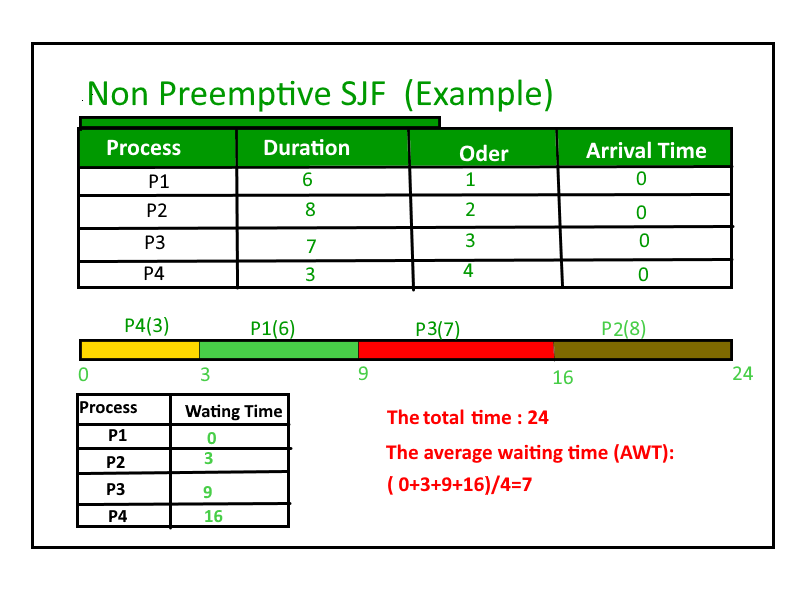

最短作业优先（SJF）或下一个最短作业是一种调度策略，它选择执行下一个执行时间最短的等待进程。 SJN是一种非抢占式算法。
- 最短作业优先具有在所有调度算法中具有最小平均等待时间的优点。
- 这是一种贪心算法。
- 如果更短的过程不断发生，它可能会导致饥饿。 使用老化的概念可以解决这个问题。
- 这实际上是不可行的，因为操作系统可能不知道突发时间，因此可能不会对它们进行排序。 虽然不可能预测执行时间，但可以使用几种方法来估计作业的执行时间，例如先前执行时间的加权平均值。 SJF可用于可以准确估算运行时间的专业环境中。
算法：
1- Sort all the processes in increasing order according to burst time. 2- Then simply, apply FCFS .

如何使用程序计算Round Robin中的次数？
- 完成时间：进程完成执行的时间。
- 周转时间：完成时间和到达时间之间的时间差。 周转时间=完成时间 - 到达时间
- 等待时间（WT）：转向时间和突发时间之间的时间差。
等待时间=周转时间 - 突发时间
在这篇文章中，我们假设到达时间为0，因此转身和完成时间相同。
// C++ program to implement Shortest Job first
#include<bits/stdc++.h>
using namespace std;
struct Process
{
int pid; // Process ID
int bt; // Burst Time
};
// This function is used for sorting all
// processes in increasing order of burst
// time
bool comparison(Process a, Process b)
{
return (a.bt < b.bt);
}
// Function to find the waiting time for all
// processes
void findWaitingTime(Process proc[], int n, int wt[])
{
// waiting time for first process is 0
wt[0] = 0;
// calculating waiting time
for (int i = 1; i < n ; i++ )
wt[i] = proc[i-1].bt + wt[i-1] ;
}
// Function to calculate turn around time
void findTurnAroundTime(Process proc[], int n,
int wt[], int tat[])
{
// calculating turnaround time by adding
// bt[i] + wt[i]
for (int i = 0; i < n ; i++)
tat[i] = proc[i].bt + wt[i];
}
//Function to calculate average time
void findavgTime(Process proc[], int n)
{
int wt[n], tat[n], total_wt = 0, total_tat = 0;
// Function to find waiting time of all processes
findWaitingTime(proc, n, wt);
// Function to find turn around time for all processes
findTurnAroundTime(proc, n, wt, tat);
// Display processes along with all details
cout << "\nProcesses "<< " Burst time "
<< " Waiting time " << " Turn around time\n";
// Calculate total waiting time and total turn
// around time
for (int i = 0; i < n; i++)
{
total_wt = total_wt + wt[i];
total_tat = total_tat + tat[i];
cout << " " << proc[i].pid << "\t\t"
<< proc[i].bt << "\t " << wt[i]
<< "\t\t " << tat[i] <<endl;
}
cout << "Average waiting time = "
<< (float)total_wt / (float)n;
cout << "\nAverage turn around time = "
<< (float)total_tat / (float)n;
}
// Driver code
int main()
{
Process proc[] = {{1, 6}, {2, 8}, {3, 7}, {4, 3}};
int n = sizeof proc / sizeof proc[0];
// Sorting processes by burst time.
sort(proc, proc + n, comparison);
cout << "Order in which process gets executed\n";
for (int i = 0 ; i < n; i++)
cout << proc[i].pid <<" ";
findavgTime(proc, n);
return 0;
}
输出：
Order in which process gets executed 4 1 3 2 Processes Burst time Waiting time Turn around time 4 3 0 3 1 6 3 9 3 7 9 16 2 8 16 24 Average waiting time = 7 Average turn around time = 13
在Set-2中，我们将讨论SJF的抢先版本，即Shortest Remaining Time First